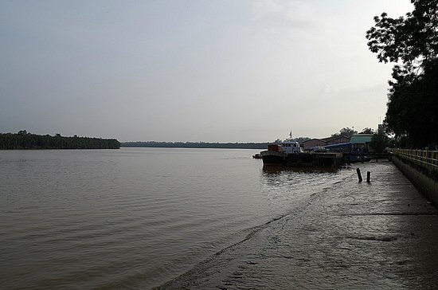
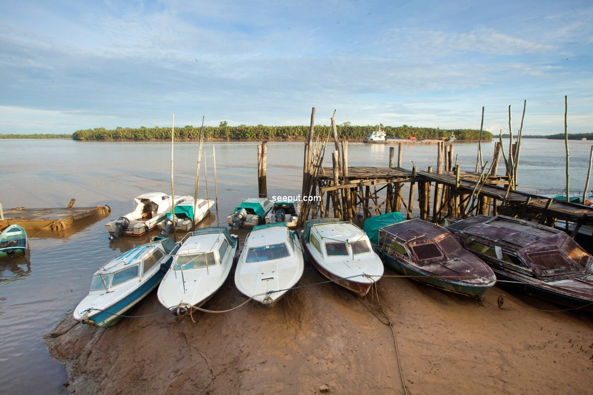
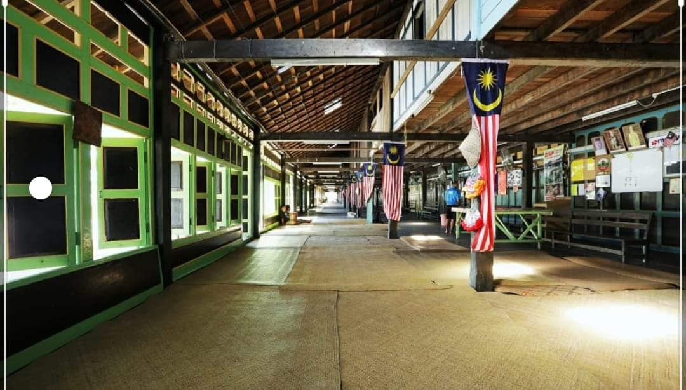
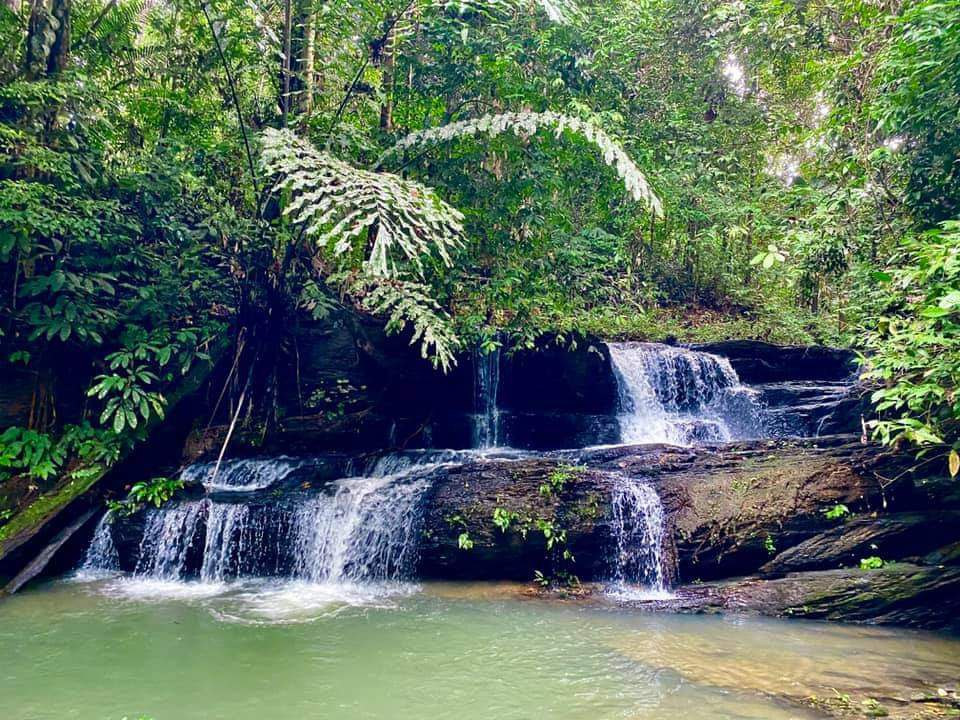
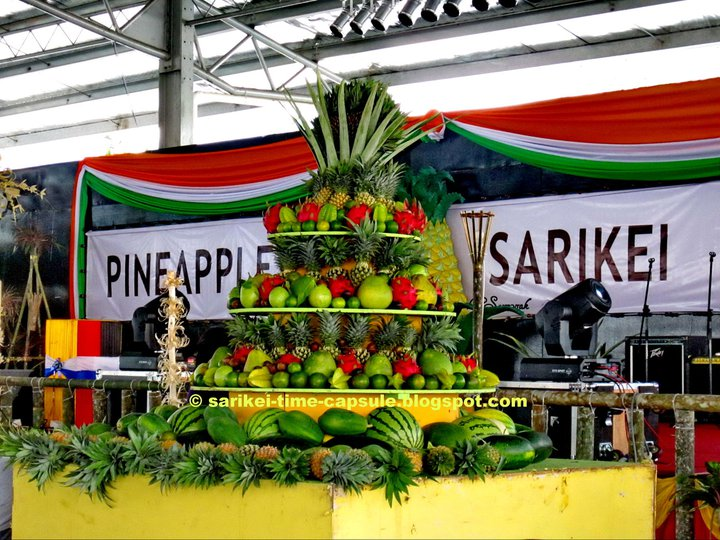
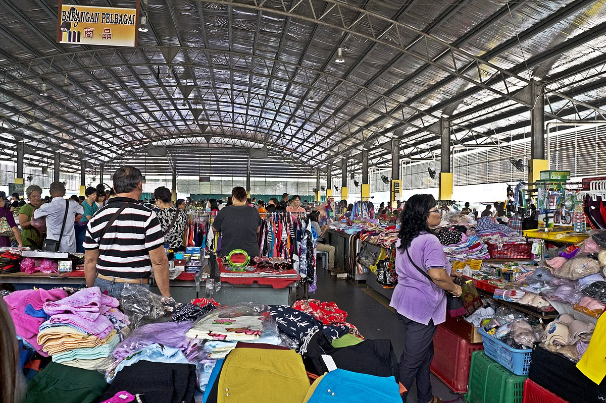
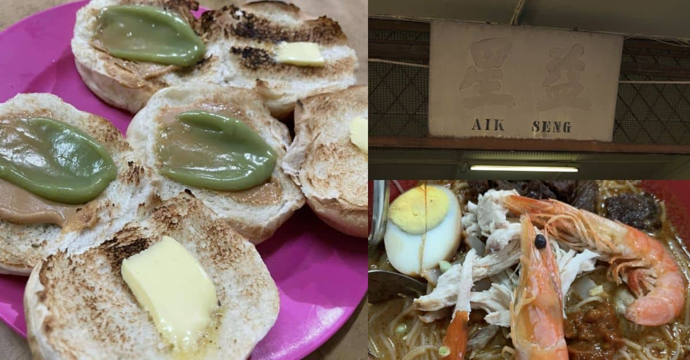

Sight seeing
Rajang River
The Rajang River is a significant attraction in Sarikei. You can take a boat ride along the river to admire the beautiful scenery and witness the local riverine lifestyle. It's a great way to experience the tranquility and natural beauty of the area.

Sarikei Jetty
The Sarikei Jetty is a bustling spot where you can observe boats coming and going, transporting goods and people. It offers a glimpse into the daily life and economic activities of the locals. You can also enjoy a leisurely stroll along the jetty and enjoy the river views.
Back To Top
Adventure
Rumah Nyuka Longhouse
If you're interested in experiencing the traditional lifestyle of the indigenous people of Sarawak, a visit to Rumah Nyuka Longhouse is a must. You can immerse yourself in the local culture, interact with the friendly residents, and learn about their customs and traditions.

Waterfalls
Sarikei is surrounded by lush greenery and offers several waterfalls for nature enthusiasts. There are several waterfalls that you can trek from Nyuka's Longhouse :
- Waterfall Sg Ulu Kuap: Level 1 / 45 minutes walk
- Waterfall Sg pau: Level 2 / 30 minutes walk
- Waterfall Sg Ruan: Level 2 / 30 minutes walk
- Waterfall Sg Munsoh: Level 3 / 1 hour walk
Back To Top
Shopping
Pesta Nanas
Pesta Nanas, or Pineapple Festival, is an annual event in Sarikei celebrating the region's pineapple industry. During the festival, you can indulge in a variety of pineapple-based products, including fresh pineapples, pineapple jams, and pastries. It's a great opportunity to taste the local flavors and buy some souvenirs.

Sarikei Central Market
Located in the heart of the town, Sarikei Central Market is a bustling marketplace where you can find a wide range of local produce, handicrafts, and snacks. It's an excellent place to immerse yourself in the vibrant atmosphere and interact with the locals.
Back To Top
Food
Aik Seng Cafe
Aik Seng Cafe is a popular local eatery known for its delicious seafood dishes, particularly their prawn noodles. You can savor the flavors of fresh seafood and indulge in other local delicacies available on their menu.
Back To Top
Accomodation

Masjid Al-Muttaqin
While Masjid Al-Muttaqin is primarily a mosque, it also offers accommodation facilities for Muslim travelers. The mosque provides basic amenities and a peaceful environment for those seeking a place to stay during their visit to Sarikei.
Back To Top